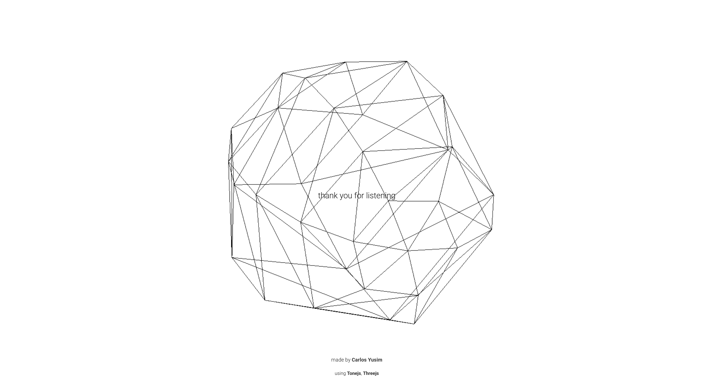
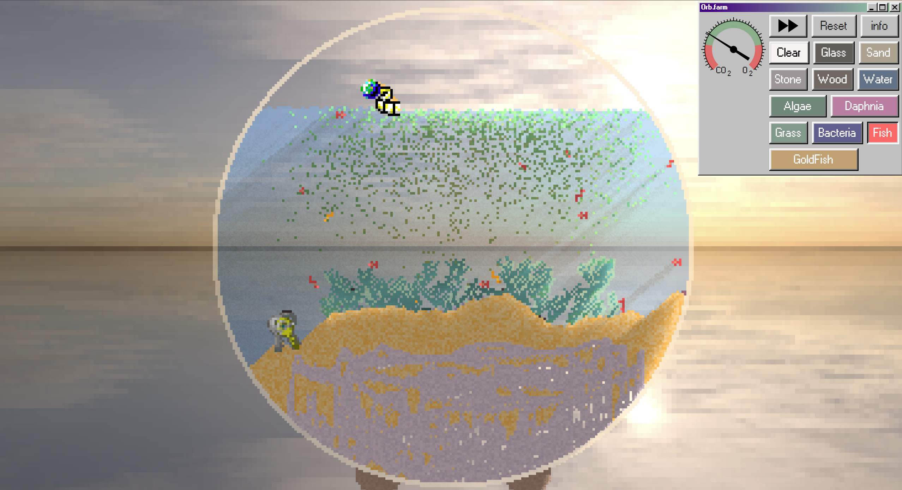

1. Information Design
As I can see from those two stunning sites, Orb.farm uses a minimalist interface with only essential information shown, mainly a palette of elements and a CO₂/O₂ meter. This low-distraction layout encourages users to focus on the visual changes in the ecosystem. In contrast, Holdspace.surge.sh presents content in a clear, structured manner, with text hierarchy, sectioning, and likely navigational cues. While Orb.farm provides exploration with minimal guidance, Holdspace prioritises clarity and legibility from the start.
2. Mapping
Orb.farm uses direct manipulation, users can drag and drop elements, instantly seeing changes in the ecosystem. Placing algae boosts oxygen, fish swim or die depending on conditions, creating an intuitive and experimental feel. Holdspace is more likely a scroll-based or button-click experience, maps interactions to standard web responses like navigation or section reveals. Orb.farm offers an emergent, system-based mapping, while Holdspace relies on consistent, task-driven mappings typical of content sites.
3. Characterisation
In Orb.farm, I can see each item like sand, algae, fish, is represented with charming pixel art and distinct behaviors, giving life to the ecosystem. The fish dart, algae expands slowly, and the environment feels animated. Holdspace likely conveys character through typography, layout, and branding elements to set tone and mood (e.g. calm, modern, professional). While Orb.farm uses dynamic visuals to form emotional connections, Holdspace engages clean design language to build a clear, trustworthy identity.
4. Feedback
Orb.farm offers real-time, continuous feedback, elements affect each other immediately, and we can see visual results like color changes in the CO₂ meter or dying fish. The system constantly reflects user actions, promoting learning through observation. Holdspace offers discrete feedback through hover effects, clickable states, or confirmation messages. Feedback here supports usability and reinforces user control, rather than simulating complex interactions.